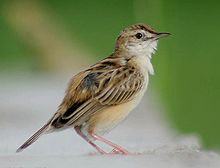
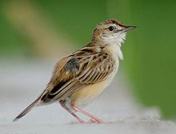

| Zitting Cisticola | |
|---|---|
|  | |
| Conservation status | |
| Binomial name | |
| Cisticola juncidis (Rafinesque, 1810) |
| Zitting Cisticola | |
|---|---|
|  | |
| Conservation status | |
| Binomial name | |
| Cisticola juncidis (Rafinesque, 1810) |
The Zitting Cisticola or Streaked Fantail Warbler[2] (Cisticola juncidis), is an Old World warbler in the genus Cisticola. This genus is sometimes split off with various other southern warbler genera and given family status as the Cisticolidae. This species was previously known as Fan-tailed Warbler , but the current name gives consistency with the many tropical cisticola species, and avoid confusion with an American species also named Fan-tailed Warbler.
It has a very wide breeding range including southern Europe, Africa outside the deserts and rainforest, and southern Asia down to northern Australia. It is mainly resident, but some East Asian populations migrate south to warmer areas in winter. This species is a rare vagrant to northern Europe, mostly as a spring overshoot. Its European range is generally expanding, although northern populations are especially susceptible to hard winters.
Zitting Cisticolas are very small insectivorous birds. These small passerines are found in tall grassland habitats, often near water. Male cisticolas are polygamous; the female builds a discreet nest deep in the grasses, often binding living leaves into the soft fabric of felted plant-down, cobwebs, and grass. The Zitting Cisticola's nest is a cup shape with a canopy of tied-together leaves or grasses overhead for camouflage; 3-6 eggs are laid.
These warblers are brown above, heavily streaked with black. The underparts are whitish, and the tail is broad, white-tipped and flicked frequently, giving rise to the alternative name for the species. The adult males have less crown streaking and more back marking than the females, but there is no great difference between the sexes or the eighteen geographical races.
Although this species is unlikely to be confused with other warblers in Europe, where it is the only cisticola, it is very similar to other members of its genus. It is best distinguished from its many African relatives by its zit-zit-zit song, given in flight. The song is always the easiest identification criterion for this genus.
These birds are more easily heard than seen, and because of their small size (about 10 cm) not always easy to recognise, particularly outside the breeding season when they seldom emerge from their grasses.

_I-_Kolkata_IMG_5046.jpg){kind=link}